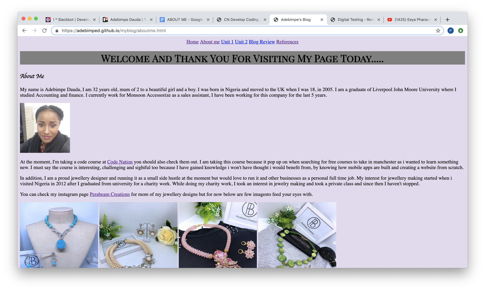

When building a website from scratch, it is important to know and understand how all required IT tools works to achieve a successful website. Such tools are Visual Studio Code, Codepen, Git and Github. Visual Studio Code is a source code editor that has built in support for Javascript, HyperText Markup Language (HTML), Cascading Style Sheets (CSS)etc, this editor runs on different types of desktop, Windows and IOS.
I am happy with the use of VSCode because it has being useful having all codes and text needed to build my website all in one place as there is no need to be moving files from one code editor to another. It also makes saving(backup) easy just by linking VScode to Git and Github.
These tools were appropriate for building my blog because it was dependable for it easy customisation and keyboard shortcuts on VSCode that makes it perfect for day-to-day use, which made it less time fiddling with my work, and more time to bring my ideas to life. Whereas the use of Trello as been a helpful platform to plan and organise my blog, from listing and keeping track of to-do lists.
I am 50% satisfied because if I had not come for this course to learn about coding, I do not see myself building a website from scratch. Although my blog might look simple but i like things in moderation, also i considered making it easy for others to read and not too much links so they don't get bored when visiting my blog.
However, if had more skills and time there is a higher percentage i would have made it better (professionally).
Implement more Calls-to-Action button on the number references and other links: so that users can go to the next step if they decide to do so.
Do more research on coding functions so that i can add more style to my blog and never stop testing.
Talk with other students to discover and figure out the problems I'm facing creating my blog to get it solved.
After the successful completion of creating my blog using HyperText Markup Language (HTML) and Cascading Style Sheets (CSS), I was constantly checking that all functions are error free from each section to fit purpose of what i have been asked to do.I believe all the functions are working well with no errors.
Remove/Minimize distraction e.g mobile phone:- by putting my phone on silent and muting all chat applications before starting on my work.
Track and limit how much time I spend on each task. I could use Trello for this, but it would be useful to track my time outside of Trello as well.
Give up on the illusion of perfection:- instead of wasting time for perfection i will do my work (blog) to the best of my knowledge and ability. However if there was enough time at hand i will go back and improve on it.
If there's an opportunity to do this work again, I will prefer to work in a team (although creating the website on my own as given an insight of how to develop a website from scratch) because tasks can be split between the teams to get more work done effectively. The use of slack will make it efficient for other people to assist each other.
As important as digital testing is, it can also be challenging because software development process can take several months to a year depending on what will be created. Digital Testing is very important because it is an essential component of software testing development to look for bugs, make sure all functions are working. While creating my blog, I had to keep testing to make sure all link functions are working to avoid having blank or not found page(s).
Google Chrome Homepage
